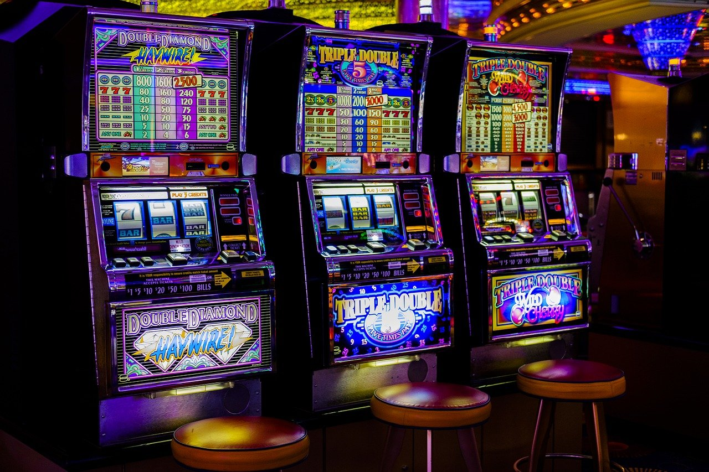

Slots

Depending on the machine, the player can insert cash or, in "ticket-in, ticket-out" machines, a paper ticket with a barcode, into a designated slot on the machine. The machine is then activated by means of a lever or button (either physical or on a touchscreen), which activates reels that spin and stop to rearrange the symbols. If a player matches a winning combination of symbols, the player earns credits based on the paytable. Retrieved from https://en.wikipedia.org/wiki/Slot_machine on March 10, 2022